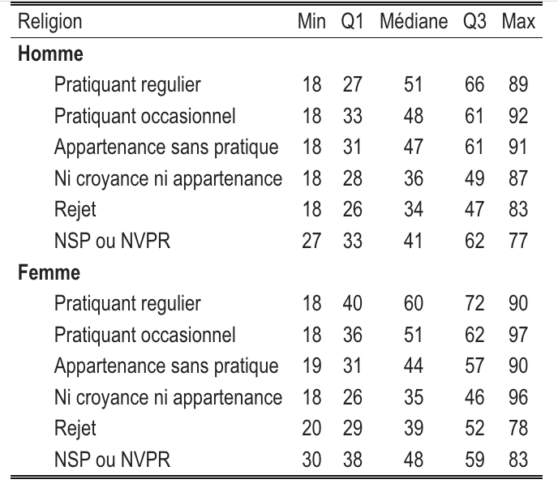
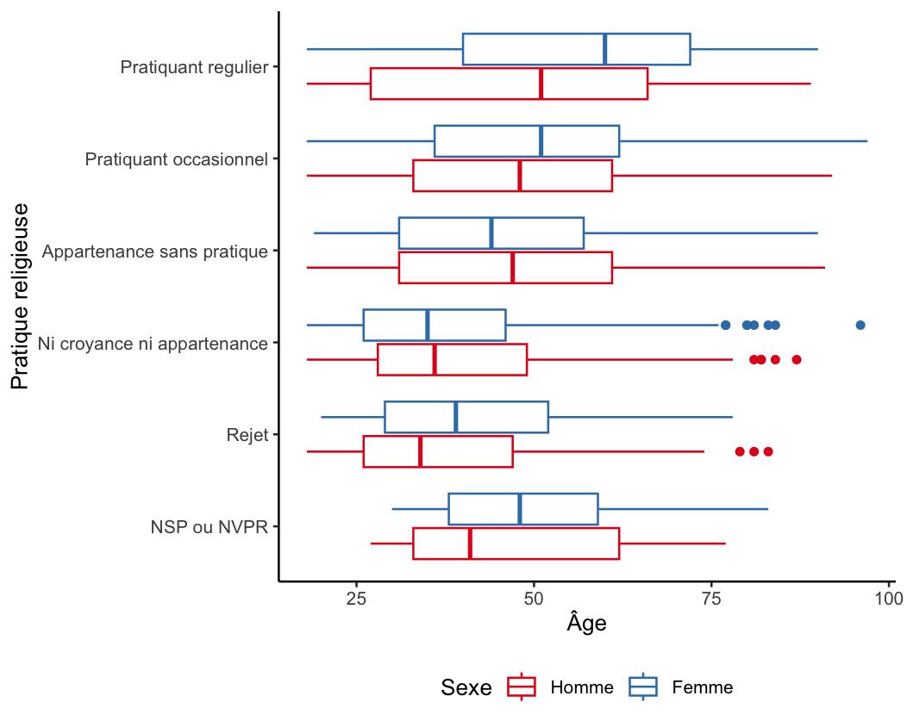
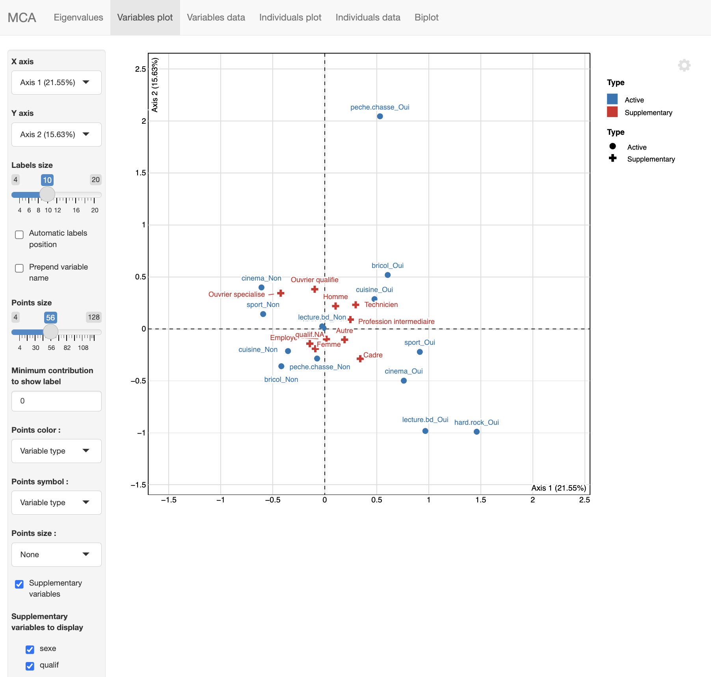

hdv2003 |>
group_by(sexe,relig) |>
summarise(
mean=wtd.mean(age,weights=poids,na.rm=T),
sd=sqrt(wtd.var(age,weights=poids,na.rm=T))5 Les relations multivariées entre variables
Nous avons jusqu’ici analysé des relations bivariées (deux variables prises deux à deux). Bien souvent, on est amené à s’intéresser à des relations multivariées.
On peut alors être tenté d’avoir recours, lorsqu’on a une variable dépendante et plusieurs variables indépendantes, à des modèles de régression. On trouvera dans le guide-R de Joseph Larmarange quelques pistes pour mettre en place ce type de modèle et le raisonnement “toutes choses égales par ailleurs”.
Toutefois, il est aussi possible de mettre en place des relations multivariées sans ce type de modélisation.
Dans ce chapitre, nous mobilisons les mêmes packages et les mêmes données que dans le chapitre précédent des données pondérées.
5.1 Le tidyverse pour le multivarié sur variable quantitatives
Les outils du tidyverse permettent assez facilement d’analyser des relations multivariées lorsqu’on s’intéresse à une variable quantitative en fonction de plusieurs variables qualitatives.
Si on veut la distribution de l’âge en fonction de l’intensité de la pratique religieuse et du sexe (en réalité, on suppose ici que l’âge et le sexe influencent l’intensité de la pratique…), on pourra écrire :
Si on veut en faire un joli tableau avec kableExtra :
tab <- hdv2003 |>
group_by(sexe, relig) |>
summarise(
mean = wtd.mean(age, weights = poids, na.rm = TRUE),
sd = sqrt(wtd.var(age, weights = poids, na.rm = TRUE)),
.groups = "drop" #on enlève l'option de grouping présente dans l'objet créé
) |>
# Commandes pour présenter une cellule rassemblant moyenne et sd : moyenne (sd)
mutate(mean_sd = sprintf("%.1f (%.1f)", mean, sd)) |>
select(sexe, relig, mean_sd)
# Tidy le tableau
tab_wide <- tab |>
pivot_wider(names_from = sexe, values_from = mean_sd)
#Joli tableau
tab_wide |>
kbl(col.names = c("Religions", "Homme","Femme"), align = "lcc") |>
kable_classic_2(full_width = FALSE)Imaginons qu’on veuille les 5 nombres de Tukey :
tab<-hdv2003 |>
group_by(sexe,relig) |>
summarise(
min = min(age, na.rm = TRUE),
q1 = wtd.quantile(age,weights=poids, probs=0.25, na.rm = TRUE),
median = wtd.quantile(age, weights=poids,probs=.5, na.rm = TRUE),
q3 = wtd.quantile(age,weights=poids,probs= 0.75, na.rm = TRUE),
max = max(age, na.rm = TRUE),
.groups="drop"
)
tab |>
select(relig,min:max) |>
kbl(digits=1,
col.names = c("Religion", "Min", "Q1", "Médiane", "Q3", "Max"),
align = c("l", rep("c", 5))
) |>
kable_classic_2(full_width = FALSE) |>
pack_rows("Homme", 1, 6) %>%
pack_rows("Femme", 7, 12)
Si on veut créer des boîtes à moustaches, on peut utiliser les “facet” de ggplot ou ajouter un argument “color” :
ggplot(hdv2003, aes(x = fct_rev(relig),y=age,weight=poids)) +
geom_boxplot() +
facet_wrap(~sexe)+
labs(x="Pratique religieuse",y="Âge")+
coord_flip()+
theme_classic()
ggplot(hdv2003, aes(x = fct_rev(relig),y=age,weight=poids,color=sexe)) +
geom_boxplot() +
coord_flip()+
labs(x="Pratique religieuse",y="Âge",color="Sexe")+
scale_color_brewer(palette="Set1")+
theme_classic()+
theme(legend.position="bottom")
#Ici fct_rev sert à inverser l'ordre des modalités de la variable relig
5.2 Le tableau croisé multi-dimensions
Nous avons précédemment étudé la pratique d’aller au cinéma en fonction du niveau de diplôme. L’effet du diplôme varie-t-il suivant le sexe ?
On peut à nouveau réaliser un tableau croisé avec pourcentages en lignes, cette fois en mobilisant group_by. Attention, pour obtenir un tableau croisé du cinema en fonction du diplôme pour les hommes d’une part et les femmes d’autre part, le plus simple est d’écrire ceci :
hdv2003 |> group_by(nivetud,cinema) |> freqtable(sexe,weights=poids,na.rm = T) |> rprop()Pour faire un joli tableau :
tab<-hdv2003 |> group_by(nivetud,cinema) |> freqtable(sexe,weights=poids,na.rm = T) |> rprop()
df_tab<-as.data.frame(tab) |>
pivot_wider(names_from=cinema,values_from=Freq)
df_tab |>
select(nivetud,Non,Oui,Total) |>
kbl(digits=0,
col.names = c("Niveau d'études","Oui","Non","Total")) |>
kable_classic_2(full_width = FALSE) |>
pack_rows("Homme", 1, 9) %>%
pack_rows("Femme", 10, 18)Pour faire un diagramme à barres :
tab<-hdv2003 |> group_by(nivetud,cinema) |> freqtable(sexe,weights=poids,na.rm = T) |> rprop(total=F)
df_tab<-as.data.frame(tab)
ggplot(df_tab,aes(x=nivetud,y=Freq,fill=cinema))+
geom_bar(stat = "identity")+
facet_wrap(~sexe)+
labs(y="Proportion (%)",x="Diplôme",fill="Est allé au cinéma")+
coord_flip()+
theme_classic()+
theme(legend.position="bottom")5.3 L’analyse géométrique des données : le cas de l’ACM
Lorsqu’on cherche à étudier de multiples associations entre variables, on peut mobiliser l’analyse géométrique des données, et notamment l’Analyse des Correspondances Multiples (ACM).
On présente ici rapidement comment mettre en oeuvre une ACM avec le package FactoMineR.
5.3.1 Réaliser une ACM avec FactoMineR
On sélectionne d’abord les variables de fréquence de pratique culturelle qui sont déjà codées sous forme catégorielle et deux variables qualitative supplémentaire, le sexe et la PCS (variable qualif).
d_acm<- hdv2003 |>
select(hard.rock,lecture.bd,peche.chasse,cuisine,bricol,cinema,sport,sexe,qualif)On utilise ensuite la fonction MCA pour lancer une ACM :
acm<-MCA(d_acm,quali.sup=c(8,9),row.w=hdv2003$poids)L’argument quali.sup permet d’indiquer les colonnes des variables supplémentaires de l’analyse. Par défaut, les autres sont considérées comme des variables actives.
On a veillé à ajouter l’argument row.w qui permet de pondérer les individus dans l’analyse. Cette analyse produit trois graphiques présentés en bas à droite :
le carré des liaisons sur le premier plan factoriel,
le nuage des individus sur le premier plan factoriel et
le nuage des catégories des variables actives et supplémentaires sur le premier plan factoriel.
Il suffit de cliquer sur la flèche gauche pour avoir les différents graphiques.
5.3.2 Explorer les résultats d’une ACM
On peut avoir recours à l’interface explor du package explor de Julien Barnier pour visualiser les résultats de l’ACM :
explor(acm)